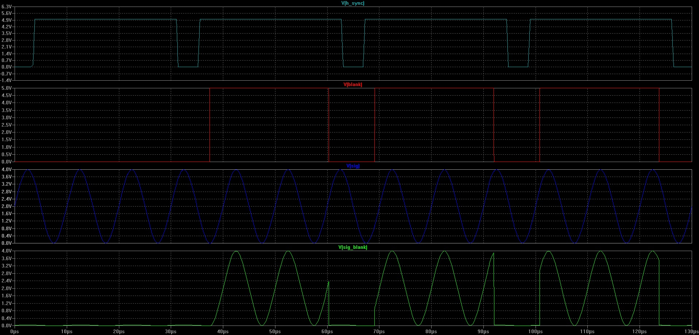
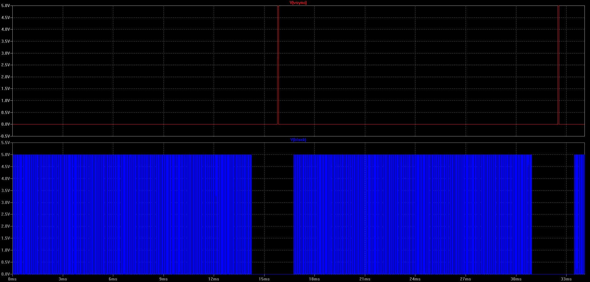
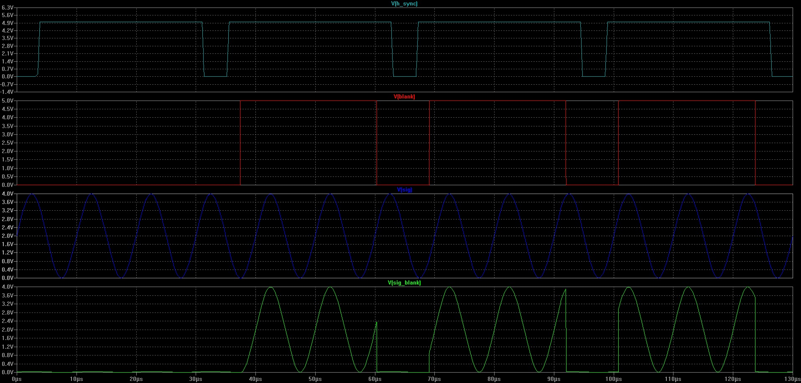
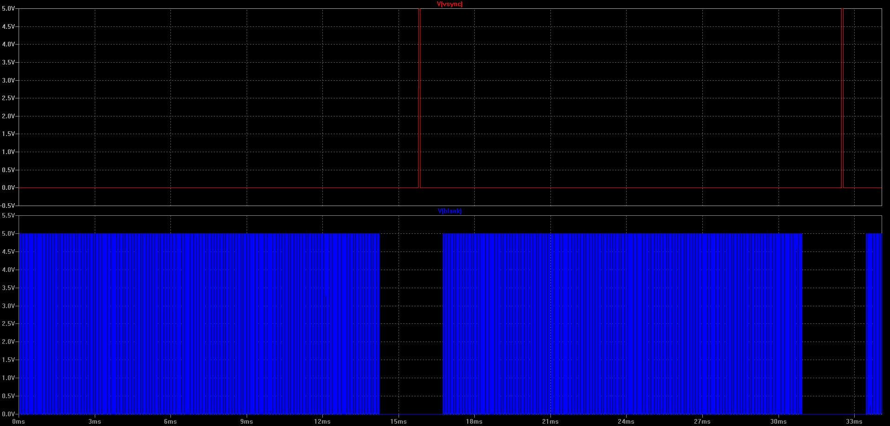

ANALOG VGA SYNC AND VIDEO BLANKING CIRCUIT
This circuit is an idea for a possible Video synth
It creates the blanking period needed for the VGA color signals to be properly read
from the vga controller screen.
documentation about VGA timming on the internet is rather confusing. Many diagrams
show the vsync being a low pulse whereas at the video card output it is the oposite.
This circuit requires external vertical sync and horizontal to build the blanking period.
Of course, the ideal design would be self-sufficient and generate its own timming. This
idea was to verify the circuit only.
 Only tested with LT spice with "ideal" models. I think a cheaper comparator that the LTC 6752
would be enough. It seems that the LTC6752 is quite overkill for the application.
the diagram below shows the different signals for the horizontal period (we could also call it
a "scanline" period as well). We may notice that the oscillator (the sinewave) is free-running,
we could freeze it during the blanking to have it in sync with the system.

Signals for one frame

Only tested with LT spice with "ideal" models. I think a cheaper comparator that the LTC 6752
would be enough. It seems that the LTC6752 is quite overkill for the application.
the diagram below shows the different signals for the horizontal period (we could also call it
a "scanline" period as well). We may notice that the oscillator (the sinewave) is free-running,
we could freeze it during the blanking to have it in sync with the system.

Signals for one frame

{kind=link}
{kind=link}